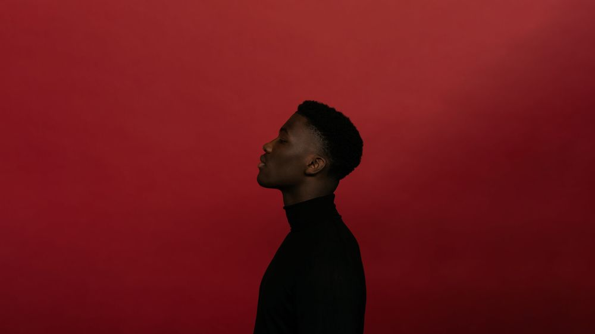

This Weeks Finest Picks.
-
CLAUDE
#concert
Claude Kiambe is a Dutch singer originally from Congo, who has quickly become one of the biggest emerging talents in the Netherlands. His music consists of a blend of Dutch and French lyrics supported by a catchy beat, and is reminiscent of Stromae. The fact that Claude is capturing the hearts of many Dutch people became evident when he released the mega-hit 'Ladada (Mon dernier mot)'. This song reached the number 1 position in the Dutch Top 40 last year and was the most Shazamed track in the Netherlands. This great success wasn’t enough, and the singer released more hits such as 'Layla' and his latest track 'Vas-y', in collaboration with the well-known duo Suzan & Freek. Witness the singer now in our intimate OZ.
 -
JORDAN MACKAMPA
#concert
The Jordan Mackampa show in Melkweg is completely sold out, but there are still tickets left for his show in TivoliVredenburg on Wednesday 16 October! Jordan Mackampa effortlessly blends Congolese influences with his Midlands life experiences in his music. His soulful songs, inspired by legends like Marvin Gaye and Bill Withers, intricately weave his timeless voice with captivating melodies and profound lyrics into an enchanting sound that embraces his personal journey and urban tales. He recently announced the arrival of his new album 'Welcome Home, Kid!' set to release on February 16, 2024. In March, he'll be gracing our Max stage!